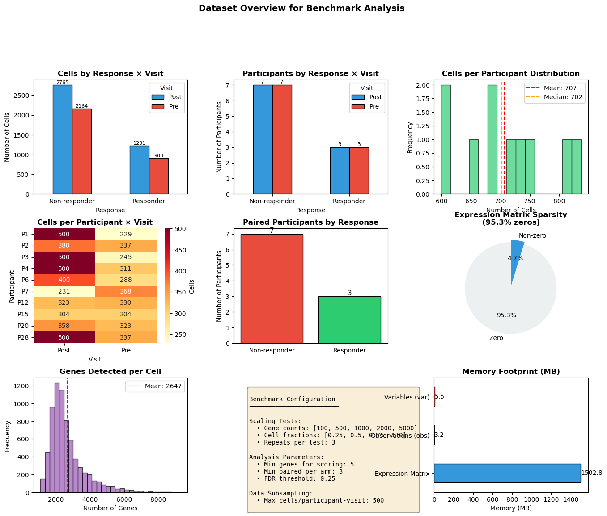
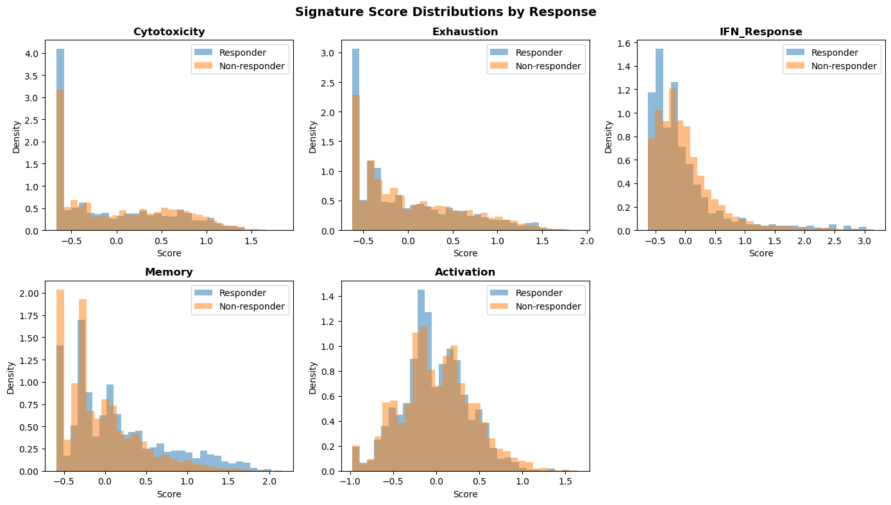
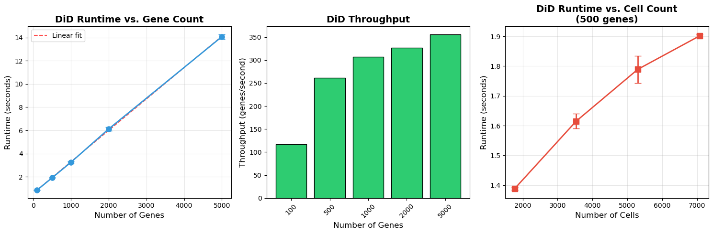
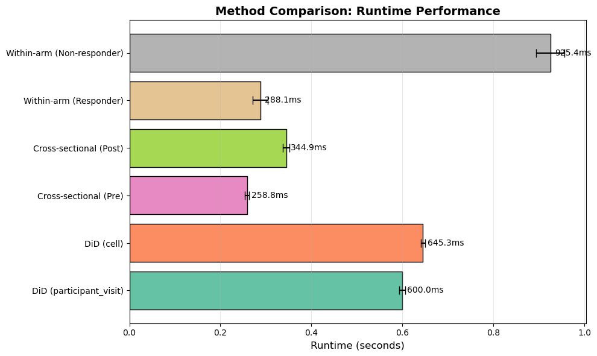
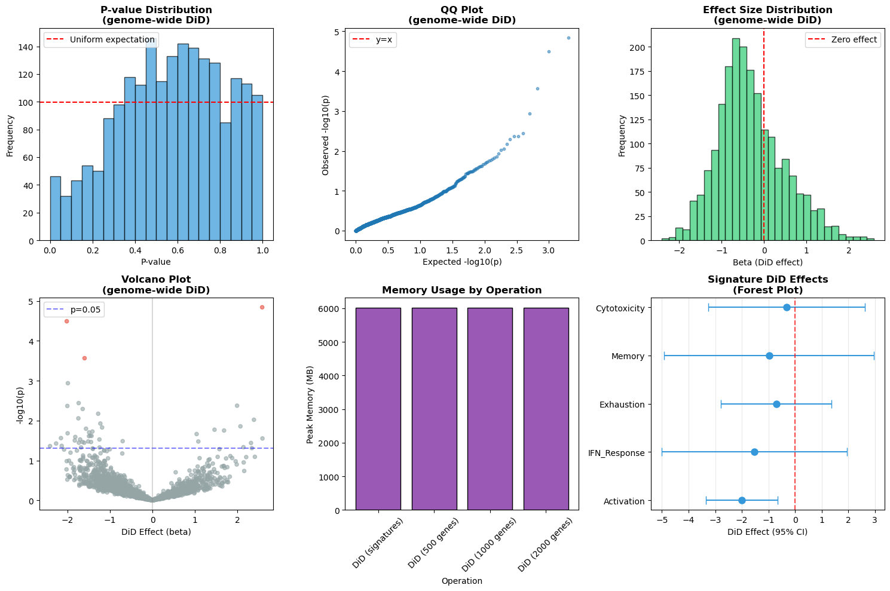
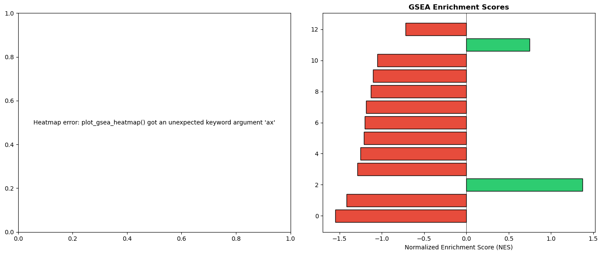
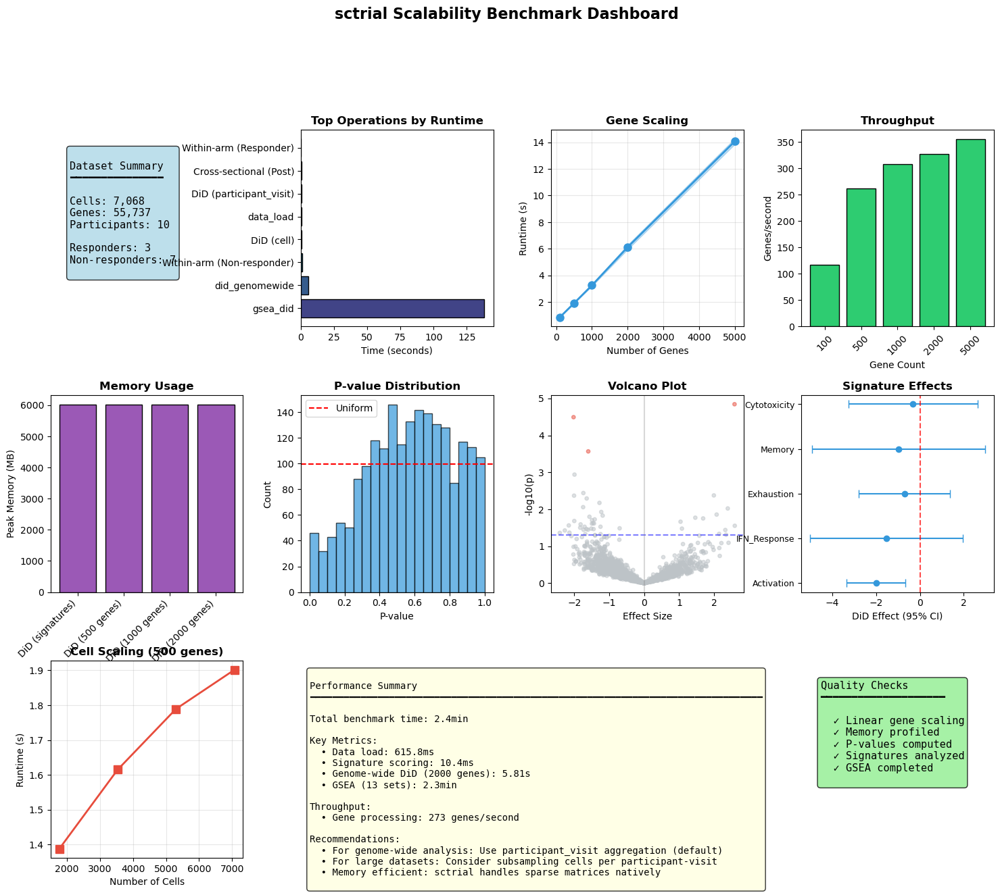

sctrial: Scalability Analysis
This notebook provides a comprehensive benchmark analysis of sctrial on a real longitudinal immunotherapy dataset (Sade‑Feldman et al., Cell 2018; GSE120575).
Benchmark Objectives
Scaling Analysis: How does runtime scale with dataset size (cells, genes, participants)?
Method Comparison: Compare different aggregation strategies and statistical approaches
Memory Efficiency: Profile memory usage across operations
Statistical Validation: Verify correctness of statistical outputs
Reproducibility: Demonstrate consistent results across runs
Table of Contents
Setup & Configuration - Environment, parameters, data loading
Dataset Overview - Exploratory analysis of the benchmark dataset
Scaling Benchmarks - Runtime vs. dataset dimensions
Method Benchmarks - Comparison of aggregation and statistical methods
Memory Profiling - Memory usage analysis
Statistical Validation - Correctness verification
Full Pipeline Benchmark - End-to-end performance
Results Dashboard - Summary visualizations
[1]:
import warnings
warnings.filterwarnings('ignore', category=FutureWarning)
warnings.filterwarnings('ignore', category=UserWarning)
warnings.filterwarnings('ignore', category=DeprecationWarning)
import time
import tracemalloc
import gc
from functools import wraps
from typing import Callable, Any
import numpy as np
import pandas as pd
import matplotlib.pyplot as plt
import seaborn as sns
import scanpy as sc
import scipy.sparse as sp
import sctrial as st
from statsmodels.stats.multitest import multipletests
pd.options.mode.chained_assignment = None
sc.settings.verbosity = 0
# =============================================================================
# CONFIGURATION
# =============================================================================
SEED = 42
np.random.seed(SEED)
# Analysis parameters
MIN_GENES_FOR_SCORE = 5
MIN_PAIRED_PER_ARM = 3
FDR_ALPHA = 0.25
# Benchmark parameters
MAX_CELLS_PER_PARTICIPANT_VISIT = 500
SCALING_GENE_COUNTS = [100, 500, 1000, 2000, 5000] # Gene scaling test
SCALING_CELL_FRACTIONS = [0.25, 0.5, 0.75, 1.0] # Cell scaling test
N_BENCHMARK_REPEATS = 3 # Repeats for timing stability
# Storage for benchmark results
benchmark_results = {
'timing': {},
'memory': {},
'scaling': [],
'validation': {}
}
# =============================================================================
# BENCHMARK UTILITIES
# =============================================================================
def timed_run(func: Callable, *args, n_repeats: int = 1, **kwargs) -> tuple[Any, float, float]:
"""Run function with timing, return (result, mean_time, std_time)."""
times = []
result = None
for _ in range(n_repeats):
gc.collect()
start = time.perf_counter()
result = func(*args, **kwargs)
times.append(time.perf_counter() - start)
return result, np.mean(times), np.std(times)
def memory_profile(func: Callable, *args, **kwargs) -> tuple[Any, float, float]:
"""Run function with memory profiling, return (result, peak_mb, current_mb)."""
gc.collect()
tracemalloc.start()
result = func(*args, **kwargs)
current, peak = tracemalloc.get_traced_memory()
tracemalloc.stop()
return result, peak / 1024 / 1024, current / 1024 / 1024
def format_time(seconds: float) -> str:
"""Format seconds to human-readable string."""
if seconds < 1:
return f"{seconds*1000:.1f}ms"
elif seconds < 60:
return f"{seconds:.2f}s"
else:
return f"{seconds/60:.1f}min"
print("=" * 70)
print("SCTRIAL SCALABILITY BENCHMARK")
print("=" * 70)
print(f"sctrial version: {st.__version__}")
print(f"Random seed: {SEED}")
print(f"Benchmark repeats: {N_BENCHMARK_REPEATS}")
======================================================================
SCTRIAL SCALABILITY BENCHMARK
======================================================================
sctrial version: 0.2.1.dev1
Random seed: 42
Benchmark repeats: 3
1. Setup & Data Loading
Load the Sade-Feldman melanoma immunotherapy dataset and establish the trial design.
[2]:
from sctrial.datasets import load_sade_feldman
# Load with memory profiling
print("Loading dataset...")
(adata, load_time, _) = timed_run(
load_sade_feldman,
max_cells_per_participant_visit=MAX_CELLS_PER_PARTICIPANT_VISIT,
processed_name="sade_feldman_processed_v5_subsample.h5ad",
n_repeats=1
)
benchmark_results['timing']['data_load'] = load_time
print(f" Load time: {format_time(load_time)}")
Loading dataset...
Loaded processed Sade-Feldman dataset: 12,187 cells, 55,737 genes
Load time: 615.8ms
Data Harmonization & Trial Design Setup
[3]:
# =============================================================================
# RESPONSE HARMONIZATION
# =============================================================================
# Harmonize response labels at participant level (majority label for mixed cases)
resp_counts = (
adata.obs
.groupby(["participant_id", "response"], observed=True)
.size()
.reset_index(name="n_cells")
)
resp_n = resp_counts.groupby("participant_id")["response"].nunique()
mixed_ids = resp_n[resp_n > 1].index.tolist()
dominant_response = (
resp_counts
.sort_values(["participant_id", "n_cells"], ascending=[True, False])
.drop_duplicates("participant_id")
.set_index("participant_id")["response"]
)
RESPONSE_COL = "response_harmonized"
adata.obs[RESPONSE_COL] = adata.obs["participant_id"].map(dominant_response)
# =============================================================================
# IDENTIFY PAIRED PARTICIPANTS
# =============================================================================
visit_col = "visit"
adata.obs[visit_col] = adata.obs[visit_col].astype(str)
visits = [v for v in ["Pre", "Post"] if v in adata.obs[visit_col].unique()]
participant_summary = (
adata.obs.groupby("participant_id")[visit_col].apply(set).reset_index()
)
participant_summary["has_Pre"] = participant_summary[visit_col].apply(lambda x: "Pre" in x)
participant_summary["has_Post"] = participant_summary[visit_col].apply(lambda x: "Post" in x)
participant_summary["is_paired"] = participant_summary["has_Pre"] & participant_summary["has_Post"]
participant_summary[RESPONSE_COL] = participant_summary["participant_id"].map(dominant_response)
paired_ids = set(participant_summary.loc[participant_summary["is_paired"], "participant_id"])
paired_by_response = (
participant_summary[participant_summary["is_paired"]]
.groupby(RESPONSE_COL)
.size()
.to_dict()
)
# Subset to paired participants
adata_paired = adata[adata.obs["participant_id"].isin(paired_ids)].copy()
# =============================================================================
# TRIAL DESIGN
# =============================================================================
design = st.TrialDesign(
participant_col="participant_id",
visit_col=visit_col,
arm_col=RESPONSE_COL,
arm_treated="Responder",
arm_control="Non-responder",
celltype_col="cell_type",
)
# Store dataset info for benchmarks
dataset_info = {
'n_cells_full': adata.n_obs,
'n_cells_paired': adata_paired.n_obs,
'n_genes': adata.n_vars,
'n_participants_full': adata.obs['participant_id'].nunique(),
'n_participants_paired': len(paired_ids),
'n_paired_responder': paired_by_response.get('Responder', 0),
'n_paired_nonresponder': paired_by_response.get('Non-responder', 0),
}
benchmark_results['dataset_info'] = dataset_info
2. Dataset Overview
Comprehensive visualization of the benchmark dataset characteristics.
[4]:
# =============================================================================
# DATASET SUMMARY TABLE
# =============================================================================
print("=" * 70)
print("DATASET SUMMARY")
print("=" * 70)
summary_df = pd.DataFrame([
("Full Dataset - Cells", f"{dataset_info['n_cells_full']:,}"),
("Full Dataset - Genes", f"{dataset_info['n_genes']:,}"),
("Full Dataset - Participants", f"{dataset_info['n_participants_full']}"),
("Paired Dataset - Cells", f"{dataset_info['n_cells_paired']:,}"),
("Paired Dataset - Participants", f"{dataset_info['n_participants_paired']}"),
(" Responders (paired)", f"{dataset_info['n_paired_responder']}"),
(" Non-responders (paired)", f"{dataset_info['n_paired_nonresponder']}"),
("Visits", f"{visits}"),
("Mixed-response participants", f"{len(mixed_ids)}"),
], columns=["Metric", "Value"])
display(summary_df.style.hide(axis='index'))
# =============================================================================
# COMPREHENSIVE VISUALIZATION
# =============================================================================
fig = plt.figure(figsize=(16, 12))
gs = fig.add_gridspec(3, 3, hspace=0.3, wspace=0.3)
# 1. Cells per Response x Visit
ax1 = fig.add_subplot(gs[0, 0])
cell_counts = adata_paired.obs.groupby([RESPONSE_COL, visit_col], observed=True).size().unstack(fill_value=0)
cell_counts.plot(kind="bar", ax=ax1, color=['#3498db', '#e74c3c'], edgecolor='black')
ax1.set_title("Cells by Response × Visit", fontsize=12, fontweight='bold')
ax1.set_xlabel("Response")
ax1.set_ylabel("Number of Cells")
ax1.legend(title="Visit")
ax1.tick_params(axis='x', rotation=0)
for container in ax1.containers:
ax1.bar_label(container, fmt='%d', fontsize=8)
# 2. Participants per Response x Visit
ax2 = fig.add_subplot(gs[0, 1])
pt_counts = adata_paired.obs.groupby([RESPONSE_COL, visit_col], observed=True)["participant_id"].nunique().unstack(fill_value=0)
pt_counts.plot(kind="bar", ax=ax2, color=['#3498db', '#e74c3c'], edgecolor='black')
ax2.set_title("Participants by Response × Visit", fontsize=12, fontweight='bold')
ax2.set_xlabel("Response")
ax2.set_ylabel("Number of Participants")
ax2.legend(title="Visit")
ax2.tick_params(axis='x', rotation=0)
for container in ax2.containers:
ax2.bar_label(container, fmt='%d', fontsize=9)
# 3. Cells per Participant Distribution
ax3 = fig.add_subplot(gs[0, 2])
cells_per_pt = adata_paired.obs.groupby("participant_id").size()
ax3.hist(cells_per_pt, bins=15, color='#2ecc71', edgecolor='black', alpha=0.7)
ax3.axvline(cells_per_pt.mean(), color='red', linestyle='--', label=f'Mean: {cells_per_pt.mean():.0f}')
ax3.axvline(cells_per_pt.median(), color='orange', linestyle='--', label=f'Median: {cells_per_pt.median():.0f}')
ax3.set_title("Cells per Participant Distribution", fontsize=12, fontweight='bold')
ax3.set_xlabel("Number of Cells")
ax3.set_ylabel("Frequency")
ax3.legend()
# 4. Cells per Participant-Visit Heatmap
ax4 = fig.add_subplot(gs[1, 0])
cells_pv = adata_paired.obs.groupby(["participant_id", visit_col], observed=True).size().unstack(fill_value=0)
sns.heatmap(cells_pv, annot=True, fmt='d', cmap='YlOrRd', ax=ax4, cbar_kws={'label': 'Cells'})
ax4.set_title("Cells per Participant × Visit", fontsize=12, fontweight='bold')
ax4.set_xlabel("Visit")
ax4.set_ylabel("Participant")
# 5. Response Balance
ax5 = fig.add_subplot(gs[1, 1])
response_counts = pd.Series(paired_by_response)
colors = ['#e74c3c' if x == 'Non-responder' else '#2ecc71' for x in response_counts.index]
bars = ax5.bar(response_counts.index, response_counts.values, color=colors, edgecolor='black')
ax5.set_title("Paired Participants by Response", fontsize=12, fontweight='bold')
ax5.set_ylabel("Number of Participants")
ax5.bar_label(bars, fmt='%d', fontsize=11)
# 6. Data Sparsity Analysis
ax6 = fig.add_subplot(gs[1, 2])
if sp.issparse(adata_paired.X):
sparsity = 1.0 - (adata_paired.X.nnz / (adata_paired.X.shape[0] * adata_paired.X.shape[1]))
else:
sparsity = np.mean(adata_paired.X == 0)
ax6.pie([sparsity, 1-sparsity], labels=['Zero', 'Non-zero'],
autopct='%1.1f%%', colors=['#ecf0f1', '#3498db'],
explode=(0.05, 0), startangle=90)
ax6.set_title(f"Expression Matrix Sparsity\n({sparsity*100:.1f}% zeros)", fontsize=12, fontweight='bold')
# 7. Gene Detection per Cell
ax7 = fig.add_subplot(gs[2, 0])
if sp.issparse(adata_paired.X):
genes_per_cell = np.array((adata_paired.X > 0).sum(axis=1)).flatten()
else:
genes_per_cell = np.sum(adata_paired.X > 0, axis=1)
ax7.hist(genes_per_cell, bins=30, color='#9b59b6', edgecolor='black', alpha=0.7)
ax7.axvline(np.mean(genes_per_cell), color='red', linestyle='--', label=f'Mean: {np.mean(genes_per_cell):.0f}')
ax7.set_title("Genes Detected per Cell", fontsize=12, fontweight='bold')
ax7.set_xlabel("Number of Genes")
ax7.set_ylabel("Frequency")
ax7.legend()
# 8. Benchmark Configuration
ax8 = fig.add_subplot(gs[2, 1])
ax8.axis('off')
config_text = f"""
Benchmark Configuration
━━━━━━━━━━━━━━━━━━━━━━━━
Scaling Tests:
• Gene counts: {SCALING_GENE_COUNTS}
• Cell fractions: {SCALING_CELL_FRACTIONS}
• Repeats per test: {N_BENCHMARK_REPEATS}
Analysis Parameters:
• Min genes for scoring: {MIN_GENES_FOR_SCORE}
• Min paired per arm: {MIN_PAIRED_PER_ARM}
• FDR threshold: {FDR_ALPHA}
Data Subsampling:
• Max cells/participant-visit: {MAX_CELLS_PER_PARTICIPANT_VISIT}
"""
ax8.text(0.1, 0.9, config_text, transform=ax8.transAxes, fontsize=10,
verticalalignment='top', fontfamily='monospace',
bbox=dict(boxstyle='round', facecolor='wheat', alpha=0.5))
# 9. Memory Footprint
ax9 = fig.add_subplot(gs[2, 2])
if sp.issparse(adata_paired.X):
matrix_mb = adata_paired.X.data.nbytes / 1024 / 1024
else:
matrix_mb = adata_paired.X.nbytes / 1024 / 1024
obs_mb = adata_paired.obs.memory_usage(deep=True).sum() / 1024 / 1024
var_mb = adata_paired.var.memory_usage(deep=True).sum() / 1024 / 1024
mem_data = pd.Series({'Expression Matrix': matrix_mb, 'Observations (obs)': obs_mb, 'Variables (var)': var_mb})
mem_data.plot(kind='barh', ax=ax9, color=['#3498db', '#2ecc71', '#e74c3c'], edgecolor='black')
ax9.set_title("Memory Footprint (MB)", fontsize=12, fontweight='bold')
ax9.set_xlabel("Memory (MB)")
for i, v in enumerate(mem_data):
ax9.text(v + 0.1, i, f'{v:.1f}', va='center')
plt.suptitle("Dataset Overview for Benchmark Analysis", fontsize=14, fontweight='bold', y=1.02)
plt.tight_layout()
plt.show()
print(f"\nTotal estimated memory: {matrix_mb + obs_mb + var_mb:.1f} MB")
======================================================================
DATASET SUMMARY
======================================================================
| Metric | Value |
|---|---|
| Full Dataset - Cells | 12,187 |
| Full Dataset - Genes | 55,737 |
| Full Dataset - Participants | 25 |
| Paired Dataset - Cells | 7,068 |
| Paired Dataset - Participants | 10 |
| Responders (paired) | 3 |
| Non-responders (paired) | 7 |
| Visits | ['Pre', 'Post'] |
| Mixed-response participants | 3 |

Total estimated memory: 1511.5 MB
3. Gene Signature Scoring
Score biologically relevant gene signatures for downstream analysis.
[5]:
# =============================================================================
# DEFINE GENE SIGNATURES
# =============================================================================
available = set(adata_paired.var_names)
raw_signatures = {
"Cytotoxicity": ["GZMB", "GZMA", "GZMH", "GZMK", "PRF1", "GNLY", "IFNG", "NKG7", "KLRD1", "KLRB1", "FASLG"],
"Exhaustion": ["PDCD1", "LAG3", "HAVCR2", "TIGIT", "CTLA4", "TOX", "ENTPD1", "CXCL13", "EOMES"],
"IFN_Response": ["ISG15", "IFI6", "IFIT1", "IFIT2", "IFIT3", "MX1", "MX2", "STAT1", "OAS1", "IRF7"],
"Memory": ["IL7R", "TCF7", "LEF1", "CCR7", "SELL", "CD27", "CD28"],
"Activation": ["CD69", "CD38", "HLA-DRA", "ICOS", "CD44", "IL2RA"],
}
# Filter signatures by gene availability
print("Signature Gene Coverage:")
print("-" * 50)
filtered_signatures = {}
coverage_data = []
for name, genes in raw_signatures.items():
found = [g for g in genes if g in available]
pct = len(found) / len(genes) * 100
status = "OK" if len(found) >= MIN_GENES_FOR_SCORE else "SKIP"
coverage_data.append({
'Signature': name,
'Found': len(found),
'Total': len(genes),
'Coverage': f"{pct:.0f}%",
'Status': status
})
if len(found) >= MIN_GENES_FOR_SCORE:
filtered_signatures[name] = found
coverage_df = pd.DataFrame(coverage_data)
display(coverage_df.style.hide(axis='index'))
# =============================================================================
# SCORE SIGNATURES WITH TIMING
# =============================================================================
if filtered_signatures:
def score_signatures():
return st.score_gene_sets(
adata_paired,
filtered_signatures,
layer="log1p_tpm",
method="zmean",
prefix="sig_",
)
_, score_time, score_std = timed_run(score_signatures, n_repeats=N_BENCHMARK_REPEATS)
benchmark_results['timing']['signature_scoring'] = score_time
print(f"\nSignature scoring time: {format_time(score_time)} ± {format_time(score_std)}")
print(f"Signatures scored: {len(filtered_signatures)}")
signature_cols = [c for c in adata_paired.obs.columns if c.startswith("sig_")]
# Visualize signature distributions
if signature_cols:
fig, axes = plt.subplots(2, 3, figsize=(14, 8))
axes = axes.flatten()
for i, col in enumerate(signature_cols[:6]):
ax = axes[i]
for response in adata_paired.obs[RESPONSE_COL].unique():
mask = adata_paired.obs[RESPONSE_COL] == response
data = adata_paired.obs.loc[mask, col].dropna()
ax.hist(data, bins=30, alpha=0.5, label=response, density=True)
ax.set_title(col.replace('sig_', ''), fontweight='bold')
ax.set_xlabel('Score')
ax.set_ylabel('Density')
ax.legend()
# Hide unused axes
for j in range(len(signature_cols), 6):
axes[j].axis('off')
plt.suptitle("Signature Score Distributions by Response", fontsize=14, fontweight='bold')
plt.tight_layout()
plt.show()
Signature Gene Coverage:
--------------------------------------------------
| Signature | Found | Total | Coverage | Status |
|---|---|---|---|---|
| Cytotoxicity | 11 | 11 | 100% | OK |
| Exhaustion | 9 | 9 | 100% | OK |
| IFN_Response | 10 | 10 | 100% | OK |
| Memory | 7 | 7 | 100% | OK |
| Activation | 6 | 6 | 100% | OK |
Signature scoring time: 10.4ms ± 2.7ms
Signatures scored: 5

[6]:
# =============================================================================
# PAIRING VERIFICATION
# =============================================================================
print("Pairing Verification")
print("-" * 50)
if signature_cols:
df_pv = (
adata_paired.obs
.groupby([design.participant_col, design.visit_col, design.arm_col], observed=True)[signature_cols]
.mean()
.reset_index()
)
valid_paired = {}
for feat in signature_cols:
wide = df_pv.pivot(index=design.participant_col, columns=design.visit_col, values=feat)
if visits[0] in wide.columns and visits[1] in wide.columns:
mask = wide[visits[0]].notna() & wide[visits[1]].notna()
valid_paired[feat] = set(wide[mask].index)
else:
valid_paired[feat] = set()
all_features_valid = set.intersection(*[valid_paired[f] for f in signature_cols]) if signature_cols else set()
participant_arm = adata_paired.obs.groupby(design.participant_col)[design.arm_col].first()
VALID_PAIRED_BY_RESPONSE = {
arm: {pid for pid in all_features_valid if participant_arm.get(pid) == arm}
for arm in [design.arm_treated, design.arm_control]
}
N_VALID_PAIRED = len(all_features_valid)
print(f"Participants with valid Pre+Post scores: {N_VALID_PAIRED}")
print(f" {design.arm_treated}: {len(VALID_PAIRED_BY_RESPONSE[design.arm_treated])}")
print(f" {design.arm_control}: {len(VALID_PAIRED_BY_RESPONSE[design.arm_control])}")
else:
VALID_PAIRED_BY_RESPONSE = paired_by_response
N_VALID_PAIRED = len(paired_ids)
Pairing Verification
--------------------------------------------------
Participants with valid Pre+Post scores: 10
Responder: 3
Non-responder: 7
4. Scaling Benchmarks
Analyze how sctrial performance scales with dataset dimensions.
[7]:
# =============================================================================
# SCALING BENCHMARK: Genes
# =============================================================================
print("=" * 70)
print("GENE SCALING BENCHMARK")
print("=" * 70)
print(f"Testing DiD performance across {len(SCALING_GENE_COUNTS)} gene counts...")
gene_scaling_results = []
for n_genes in SCALING_GENE_COUNTS:
if n_genes > adata_paired.n_vars:
print(f" Skipping {n_genes} genes (exceeds available {adata_paired.n_vars})")
continue
# Select genes
test_genes = list(adata_paired.var_names[:n_genes])
# Benchmark DiD
def run_did():
return st.did_table(
adata_paired,
features=test_genes,
design=design,
visits=tuple(visits),
aggregate="participant_visit",
)
_, mean_time, std_time = timed_run(run_did, n_repeats=N_BENCHMARK_REPEATS)
gene_scaling_results.append({
'n_genes': n_genes,
'mean_time': mean_time,
'std_time': std_time,
'genes_per_sec': n_genes / mean_time
})
print(f" {n_genes:,} genes: {format_time(mean_time)} ± {format_time(std_time)} "
f"({n_genes/mean_time:.0f} genes/sec)")
gene_scaling_df = pd.DataFrame(gene_scaling_results)
benchmark_results['scaling'].append(('genes', gene_scaling_df))
# =============================================================================
# SCALING BENCHMARK: Cells
# =============================================================================
print("\n" + "=" * 70)
print("CELL SCALING BENCHMARK")
print("=" * 70)
print(f"Testing DiD performance across {len(SCALING_CELL_FRACTIONS)} cell fractions...")
cell_scaling_results = []
n_test_genes = 500 # Fixed gene count for cell scaling test
for frac in SCALING_CELL_FRACTIONS:
n_cells = int(adata_paired.n_obs * frac)
# Subsample cells (stratified by participant-visit)
if frac < 1.0:
sampled_idx = (
adata_paired.obs
.groupby([design.participant_col, design.visit_col], observed=True)
.apply(lambda x: x.sample(frac=frac, random_state=SEED) if len(x) > 1 else x)
.index.get_level_values(-1)
)
adata_sub = adata_paired[sampled_idx].copy()
else:
adata_sub = adata_paired
test_genes = list(adata_sub.var_names[:n_test_genes])
def run_did_cells():
return st.did_table(
adata_sub,
features=test_genes,
design=design,
visits=tuple(visits),
aggregate="participant_visit",
)
_, mean_time, std_time = timed_run(run_did_cells, n_repeats=N_BENCHMARK_REPEATS)
cell_scaling_results.append({
'cell_fraction': frac,
'n_cells': adata_sub.n_obs,
'mean_time': mean_time,
'std_time': std_time,
})
print(f" {frac*100:.0f}% ({adata_sub.n_obs:,} cells): {format_time(mean_time)} ± {format_time(std_time)}")
cell_scaling_df = pd.DataFrame(cell_scaling_results)
benchmark_results['scaling'].append(('cells', cell_scaling_df))
# =============================================================================
# SCALING VISUALIZATION
# =============================================================================
fig, axes = plt.subplots(1, 3, figsize=(15, 5))
# Plot 1: Gene scaling
ax1 = axes[0]
ax1.errorbar(gene_scaling_df['n_genes'], gene_scaling_df['mean_time'],
yerr=gene_scaling_df['std_time'], marker='o', capsize=5,
color='#3498db', linewidth=2, markersize=8)
ax1.set_xlabel('Number of Genes', fontsize=12)
ax1.set_ylabel('Runtime (seconds)', fontsize=12)
ax1.set_title('DiD Runtime vs. Gene Count', fontsize=14, fontweight='bold')
ax1.grid(True, alpha=0.3)
# Add linear fit
if len(gene_scaling_df) > 2:
z = np.polyfit(gene_scaling_df['n_genes'], gene_scaling_df['mean_time'], 1)
p = np.poly1d(z)
x_fit = np.linspace(gene_scaling_df['n_genes'].min(), gene_scaling_df['n_genes'].max(), 100)
ax1.plot(x_fit, p(x_fit), '--', color='red', alpha=0.7, label=f'Linear fit')
ax1.legend()
# Plot 2: Throughput
ax2 = axes[1]
ax2.bar(gene_scaling_df['n_genes'].astype(str), gene_scaling_df['genes_per_sec'],
color='#2ecc71', edgecolor='black')
ax2.set_xlabel('Number of Genes', fontsize=12)
ax2.set_ylabel('Throughput (genes/second)', fontsize=12)
ax2.set_title('DiD Throughput', fontsize=14, fontweight='bold')
ax2.tick_params(axis='x', rotation=45)
# Plot 3: Cell scaling
ax3 = axes[2]
ax3.errorbar(cell_scaling_df['n_cells'], cell_scaling_df['mean_time'],
yerr=cell_scaling_df['std_time'], marker='s', capsize=5,
color='#e74c3c', linewidth=2, markersize=8)
ax3.set_xlabel('Number of Cells', fontsize=12)
ax3.set_ylabel('Runtime (seconds)', fontsize=12)
ax3.set_title('DiD Runtime vs. Cell Count\n(500 genes)', fontsize=14, fontweight='bold')
ax3.grid(True, alpha=0.3)
plt.tight_layout()
plt.savefig('scaling_benchmark.png', dpi=150, bbox_inches='tight')
plt.show()
print("\nScaling analysis saved to 'scaling_benchmark.png'")
======================================================================
GENE SCALING BENCHMARK
======================================================================
Testing DiD performance across 5 gene counts...
100 genes: 856.9ms ± 13.5ms (117 genes/sec)
500 genes: 1.92s ± 5.1ms (261 genes/sec)
1,000 genes: 3.26s ± 61.1ms (307 genes/sec)
2,000 genes: 6.12s ± 165.9ms (327 genes/sec)
5,000 genes: 14.07s ± 212.0ms (355 genes/sec)
======================================================================
CELL SCALING BENCHMARK
======================================================================
Testing DiD performance across 4 cell fractions...
/Users/omarm/mamba/envs/diab_did/lib/python3.10/site-packages/statsmodels/regression/linear_model.py:1884: RuntimeWarning: invalid value encountered in sqrt
return np.sqrt(np.diag(self.cov_params()))
/Users/omarm/mamba/envs/diab_did/lib/python3.10/site-packages/statsmodels/regression/linear_model.py:1884: RuntimeWarning: invalid value encountered in sqrt
return np.sqrt(np.diag(self.cov_params()))
/Users/omarm/mamba/envs/diab_did/lib/python3.10/site-packages/statsmodels/regression/linear_model.py:1884: RuntimeWarning: invalid value encountered in sqrt
return np.sqrt(np.diag(self.cov_params()))
/Users/omarm/mamba/envs/diab_did/lib/python3.10/site-packages/statsmodels/regression/linear_model.py:1884: RuntimeWarning: invalid value encountered in sqrt
return np.sqrt(np.diag(self.cov_params()))
/Users/omarm/mamba/envs/diab_did/lib/python3.10/site-packages/statsmodels/regression/linear_model.py:1884: RuntimeWarning: invalid value encountered in sqrt
return np.sqrt(np.diag(self.cov_params()))
/Users/omarm/mamba/envs/diab_did/lib/python3.10/site-packages/statsmodels/regression/linear_model.py:1884: RuntimeWarning: invalid value encountered in sqrt
return np.sqrt(np.diag(self.cov_params()))
25% (1,767 cells): 1.39s ± 5.3ms
50% (3,534 cells): 1.62s ± 24.4ms
/Users/omarm/mamba/envs/diab_did/lib/python3.10/site-packages/statsmodels/regression/linear_model.py:1884: RuntimeWarning: invalid value encountered in sqrt
return np.sqrt(np.diag(self.cov_params()))
/Users/omarm/mamba/envs/diab_did/lib/python3.10/site-packages/statsmodels/regression/linear_model.py:1884: RuntimeWarning: invalid value encountered in sqrt
return np.sqrt(np.diag(self.cov_params()))
/Users/omarm/mamba/envs/diab_did/lib/python3.10/site-packages/statsmodels/regression/linear_model.py:1884: RuntimeWarning: invalid value encountered in sqrt
return np.sqrt(np.diag(self.cov_params()))
75% (5,301 cells): 1.79s ± 45.8ms
100% (7,068 cells): 1.90s ± 5.9ms

Scaling analysis saved to 'scaling_benchmark.png'
[8]:
# =============================================================================
# METHOD COMPARISON BENCHMARK
# =============================================================================
print("=" * 70)
print("METHOD COMPARISON BENCHMARK")
print("=" * 70)
method_results = []
# Test different aggregation strategies
agg_modes = ["participant_visit", "cell"]
test_features = signature_cols if signature_cols else list(adata_paired.var_names[:100])
print("\nAggregation Mode Comparison:")
print("-" * 50)
for agg_mode in agg_modes:
def run_agg_test():
return st.did_table(
adata_paired,
features=test_features,
design=design,
visits=tuple(visits),
aggregate=agg_mode,
)
try:
result, mean_time, std_time = timed_run(run_agg_test, n_repeats=N_BENCHMARK_REPEATS)
n_results = len(result) if result is not None else 0
method_results.append({
'method': f'DiD ({agg_mode})',
'mean_time': mean_time,
'std_time': std_time,
'n_results': n_results
})
print(f" {agg_mode}: {format_time(mean_time)} ± {format_time(std_time)}")
except Exception as e:
print(f" {agg_mode}: FAILED - {e}")
# Test cross-sectional comparisons
print("\nCross-sectional Comparison:")
print("-" * 50)
for v in visits:
def run_cross():
return st.between_arm_comparison(
adata_paired,
visit=v,
features=test_features,
design=design,
aggregate="participant_visit",
)
result, mean_time, std_time = timed_run(run_cross, n_repeats=N_BENCHMARK_REPEATS)
method_results.append({
'method': f'Cross-sectional ({v})',
'mean_time': mean_time,
'std_time': std_time,
'n_results': len(result) if result is not None else 0
})
print(f" {v}: {format_time(mean_time)} ± {format_time(std_time)}")
# Test within-arm comparisons
print("\nWithin-arm Comparison:")
print("-" * 50)
for arm in [design.arm_treated, design.arm_control]:
if paired_by_response.get(arm, 0) < MIN_PAIRED_PER_ARM:
print(f" {arm}: SKIPPED (insufficient participants)")
continue
def run_within():
return st.within_arm_comparison(
adata_paired,
arm=arm,
features=test_features,
design=design,
visits=tuple(visits),
aggregate="participant_visit",
)
result, mean_time, std_time = timed_run(run_within, n_repeats=N_BENCHMARK_REPEATS)
method_results.append({
'method': f'Within-arm ({arm})',
'mean_time': mean_time,
'std_time': std_time,
'n_results': len(result) if result is not None else 0
})
print(f" {arm}: {format_time(mean_time)} ± {format_time(std_time)}")
method_df = pd.DataFrame(method_results)
benchmark_results['timing']['methods'] = method_df
# Visualization
fig, ax = plt.subplots(figsize=(10, 6))
colors = plt.cm.Set2(np.linspace(0, 1, len(method_df)))
bars = ax.barh(method_df['method'], method_df['mean_time'],
xerr=method_df['std_time'], capsize=5,
color=colors, edgecolor='black')
ax.set_xlabel('Runtime (seconds)', fontsize=12)
ax.set_title('Method Comparison: Runtime Performance', fontsize=14, fontweight='bold')
ax.grid(True, axis='x', alpha=0.3)
# Add time labels
for bar, time_val in zip(bars, method_df['mean_time']):
ax.text(bar.get_width() + 0.01, bar.get_y() + bar.get_height()/2,
format_time(time_val), va='center', fontsize=10)
plt.tight_layout()
plt.show()
======================================================================
METHOD COMPARISON BENCHMARK
======================================================================
Aggregation Mode Comparison:
--------------------------------------------------
participant_visit: 600.0ms ± 7.0ms
cell: 645.3ms ± 5.1ms
Cross-sectional Comparison:
--------------------------------------------------
Pre: 258.8ms ± 4.8ms
Post: 344.9ms ± 7.5ms
Within-arm Comparison:
--------------------------------------------------
Responder: 288.1ms ± 16.6ms
Non-responder: 925.4ms ± 31.0ms

5. Memory Profiling & DiD Analysis
Profile memory usage and run comprehensive DiD analysis.
[9]:
# =============================================================================
# MEMORY PROFILING
# =============================================================================
print("=" * 70)
print("MEMORY PROFILING")
print("=" * 70)
memory_profile_results = []
# Profile signature DiD
if signature_cols and len(visits) == 2:
def did_signatures():
return st.did_table(
adata_paired,
features=signature_cols,
design=design,
visits=tuple(visits),
aggregate="participant_visit",
)
did_results, peak_mb, current_mb = memory_profile(did_signatures)
memory_profile_results.append({
'operation': 'DiD (signatures)',
'peak_mb': peak_mb,
'current_mb': current_mb,
'n_features': len(signature_cols)
})
print(f"DiD (signatures): Peak={peak_mb:.2f}MB, Current={current_mb:.2f}MB")
# Profile genome-wide DiD (subset)
test_gene_counts = [500, 1000, 2000]
print("\nGenome-wide DiD memory usage:")
for n_genes in test_gene_counts:
if n_genes > adata_paired.n_vars:
continue
test_genes = list(adata_paired.var_names[:n_genes])
def did_gw():
return st.did_table(
adata_paired,
features=test_genes,
design=design,
visits=tuple(visits),
aggregate="participant_visit",
)
_, peak_mb, current_mb = memory_profile(did_gw)
memory_profile_results.append({
'operation': f'DiD ({n_genes} genes)',
'peak_mb': peak_mb,
'current_mb': current_mb,
'n_features': n_genes
})
print(f" {n_genes} genes: Peak={peak_mb:.2f}MB")
memory_df = pd.DataFrame(memory_profile_results)
benchmark_results['memory'] = memory_df
# =============================================================================
# DID RESULTS ANALYSIS
# =============================================================================
print("\n" + "=" * 70)
print("DID RESULTS: SIGNATURES")
print("=" * 70)
if did_results is not None and not did_results.empty:
display(did_results[["feature", "beta_DiD", "se_DiD", "p_DiD", "FDR_DiD", "n_units"]].round(4))
# Significance summary
n_sig_nominal = (did_results['p_DiD'] < 0.05).sum()
n_sig_fdr = (did_results['FDR_DiD'] < FDR_ALPHA).sum()
print(f"\nSignificance summary:")
print(f" Nominal (p < 0.05): {n_sig_nominal}/{len(did_results)}")
print(f" FDR < {FDR_ALPHA}: {n_sig_fdr}/{len(did_results)}")
# Run full genome-wide benchmark
print("\n" + "=" * 70)
print("DID BENCHMARK: GENOME-WIDE")
print("=" * 70)
max_genes = min(2000, adata_paired.n_vars)
features_gw = list(adata_paired.var_names[:max_genes])
def did_genomewide():
return st.did_table(
adata_paired,
features=features_gw,
design=design,
visits=tuple(visits),
aggregate="participant_visit",
)
res_gw, gw_time, gw_std = timed_run(did_genomewide, n_repeats=N_BENCHMARK_REPEATS)
benchmark_results['timing']['did_genomewide'] = gw_time
print(f"Genome-wide DiD ({max_genes} genes): {format_time(gw_time)} ± {format_time(gw_std)}")
print(f"Throughput: {max_genes/gw_time:.0f} genes/second")
if res_gw is not None and not res_gw.empty:
print(f"\nTop 10 significant genes (by p-value):")
display(res_gw.head(10)[["feature", "beta_DiD", "se_DiD", "p_DiD", "FDR_DiD", "n_units"]].round(4))
======================================================================
MEMORY PROFILING
======================================================================
DiD (signatures): Peak=6015.25MB, Current=0.06MB
Genome-wide DiD memory usage:
500 genes: Peak=6015.25MB
1000 genes: Peak=6015.25MB
2000 genes: Peak=6015.25MB
======================================================================
DID RESULTS: SIGNATURES
======================================================================
| feature | beta_DiD | se_DiD | p_DiD | FDR_DiD | n_units | |
|---|---|---|---|---|---|---|
| 0 | sig_Activation | -2.0007 | 0.6869 | 0.0036 | 0.0179 | 10 |
| 1 | sig_IFN_Response | -1.5318 | 1.7770 | 0.3887 | 0.7841 | 10 |
| 2 | sig_Exhaustion | -0.7071 | 1.0625 | 0.5057 | 0.7841 | 10 |
| 3 | sig_Memory | -0.9768 | 2.0119 | 0.6273 | 0.7841 | 10 |
| 4 | sig_Cytotoxicity | -0.3207 | 1.5045 | 0.8312 | 0.8312 | 10 |
Significance summary:
Nominal (p < 0.05): 1/5
FDR < 0.25: 1/5
======================================================================
DID BENCHMARK: GENOME-WIDE
======================================================================
Genome-wide DiD (2000 genes): 5.81s ± 17.8ms
Throughput: 344 genes/second
Top 10 significant genes (by p-value):
| feature | beta_DiD | se_DiD | p_DiD | FDR_DiD | n_units | |
|---|---|---|---|---|---|---|
| 0 | ABCC8 | 2.5862 | 0.5961 | 0.0000 | 0.0286 | 10 |
| 1 | RBM7 | -2.0220 | 0.4864 | 0.0000 | 0.0321 | 10 |
| 2 | IP6K2 | -1.6014 | 0.4398 | 0.0003 | 0.1806 | 10 |
| 3 | PEX3 | -1.9954 | 0.6139 | 0.0012 | 0.5752 | 10 |
| 4 | SLC4A7 | -1.7417 | 0.5989 | 0.0036 | 0.9991 | 10 |
| 5 | PRKCZ | 1.9943 | 0.6971 | 0.0042 | 0.9991 | 10 |
| 6 | AP3M2 | -2.0080 | 0.7030 | 0.0043 | 0.9991 | 10 |
| 7 | SPAST | -1.6462 | 0.5879 | 0.0051 | 0.9991 | 10 |
| 8 | C19orf60 | -1.2808 | 0.4726 | 0.0067 | 0.9991 | 10 |
| 9 | PIK3C3 | -1.7480 | 0.6670 | 0.0088 | 0.9991 | 10 |
6. Statistical Validation
Validate statistical outputs and visualize results.
[10]:
# =============================================================================
# STATISTICAL VALIDATION
# =============================================================================
print("=" * 70)
print("STATISTICAL VALIDATION")
print("=" * 70)
validation_results = {}
# 1. P-value Distribution Check
if res_gw is not None and not res_gw.empty:
valid_p = res_gw['p_DiD'].dropna()
# Under null, p-values should be uniformly distributed
# Quick check: proportion in each quintile
quintiles = [0, 0.2, 0.4, 0.6, 0.8, 1.0]
observed_props = []
for i in range(len(quintiles)-1):
prop = ((valid_p >= quintiles[i]) & (valid_p < quintiles[i+1])).mean()
observed_props.append(prop)
validation_results['p_value_uniformity'] = observed_props
print("\n1. P-value Distribution (quintiles):")
print(" Expected: 0.20 in each quintile under null")
for i, prop in enumerate(observed_props):
print(f" [{quintiles[i]:.1f}, {quintiles[i+1]:.1f}): {prop:.3f}")
# 2. Effect Size Distribution
if res_gw is not None and not res_gw.empty:
valid_beta = res_gw['beta_DiD'].dropna()
validation_results['beta_stats'] = {
'mean': valid_beta.mean(),
'std': valid_beta.std(),
'median': valid_beta.median(),
'min': valid_beta.min(),
'max': valid_beta.max()
}
print("\n2. Effect Size Distribution:")
print(f" Mean: {valid_beta.mean():.4f}")
print(f" Std: {valid_beta.std():.4f}")
print(f" Min: {valid_beta.min():.4f}")
print(f" Max: {valid_beta.max():.4f}")
# 3. Sample Size Consistency
if res_gw is not None and not res_gw.empty:
n_units_values = res_gw['n_units'].unique()
validation_results['n_units'] = list(n_units_values)
print("\n3. Sample Size Consistency:")
print(f" n_units values: {sorted(n_units_values)}")
print(f" Expected: {N_VALID_PAIRED}")
benchmark_results['validation'] = validation_results
# =============================================================================
# VALIDATION VISUALIZATIONS
# =============================================================================
fig, axes = plt.subplots(2, 3, figsize=(15, 10))
# 1. P-value histogram
ax1 = axes[0, 0]
if res_gw is not None and not res_gw.empty:
ax1.hist(res_gw['p_DiD'].dropna(), bins=20, color='#3498db', edgecolor='black', alpha=0.7)
ax1.axhline(len(res_gw['p_DiD'].dropna())/20, color='red', linestyle='--', label='Uniform expectation')
ax1.set_xlabel('P-value')
ax1.set_ylabel('Frequency')
ax1.set_title('P-value Distribution\n(genome-wide DiD)', fontweight='bold')
ax1.legend()
else:
ax1.text(0.5, 0.5, 'No data', ha='center', va='center', transform=ax1.transAxes)
ax1.set_title('P-value Distribution', fontweight='bold')
# 2. QQ plot
ax2 = axes[0, 1]
if res_gw is not None and not res_gw.empty:
from scipy import stats
valid_p = res_gw['p_DiD'].dropna().sort_values()
expected_p = np.linspace(1/len(valid_p), 1, len(valid_p))
ax2.scatter(-np.log10(expected_p), -np.log10(valid_p), alpha=0.5, s=10)
max_val = max(-np.log10(expected_p).max(), -np.log10(valid_p).max())
ax2.plot([0, max_val], [0, max_val], 'r--', label='y=x')
ax2.set_xlabel('Expected -log10(p)')
ax2.set_ylabel('Observed -log10(p)')
ax2.set_title('QQ Plot\n(genome-wide DiD)', fontweight='bold')
ax2.legend()
else:
ax2.text(0.5, 0.5, 'No data', ha='center', va='center', transform=ax2.transAxes)
ax2.set_title('QQ Plot', fontweight='bold')
# 3. Effect size distribution
ax3 = axes[0, 2]
if res_gw is not None and not res_gw.empty:
ax3.hist(res_gw['beta_DiD'].dropna(), bins=30, color='#2ecc71', edgecolor='black', alpha=0.7)
ax3.axvline(0, color='red', linestyle='--', label='Zero effect')
ax3.set_xlabel('Beta (DiD effect)')
ax3.set_ylabel('Frequency')
ax3.set_title('Effect Size Distribution\n(genome-wide DiD)', fontweight='bold')
ax3.legend()
else:
ax3.text(0.5, 0.5, 'No data', ha='center', va='center', transform=ax3.transAxes)
ax3.set_title('Effect Size Distribution', fontweight='bold')
# 4. Volcano plot (genome-wide)
ax4 = axes[1, 0]
if res_gw is not None and not res_gw.empty:
valid_res = res_gw[res_gw['p_DiD'].notna() & res_gw['beta_DiD'].notna()]
neg_log_p = -np.log10(valid_res['p_DiD'].clip(lower=1e-300))
# Color by significance
colors = ['#e74c3c' if fdr < FDR_ALPHA else '#95a5a6'
for fdr in valid_res['FDR_DiD'].fillna(1)]
ax4.scatter(valid_res['beta_DiD'], neg_log_p, c=colors, alpha=0.6, s=20)
ax4.axhline(-np.log10(0.05), color='blue', linestyle='--', alpha=0.5, label='p=0.05')
ax4.axvline(0, color='gray', linestyle='-', alpha=0.3)
ax4.set_xlabel('DiD Effect (beta)')
ax4.set_ylabel('-log10(p)')
ax4.set_title('Volcano Plot\n(genome-wide DiD)', fontweight='bold')
ax4.legend()
else:
ax4.text(0.5, 0.5, 'No data', ha='center', va='center', transform=ax4.transAxes)
ax4.set_title('Volcano Plot', fontweight='bold')
# 5. Memory scaling
ax5 = axes[1, 1]
if len(memory_df) > 0:
ax5.bar(memory_df['operation'], memory_df['peak_mb'], color='#9b59b6', edgecolor='black')
ax5.set_xlabel('Operation')
ax5.set_ylabel('Peak Memory (MB)')
ax5.set_title('Memory Usage by Operation', fontweight='bold')
ax5.tick_params(axis='x', rotation=45)
else:
ax5.text(0.5, 0.5, 'No data', ha='center', va='center', transform=ax5.transAxes)
ax5.set_title('Memory Usage', fontweight='bold')
# 6. Signature-level results
ax6 = axes[1, 2]
if did_results is not None and not did_results.empty:
# Forest plot style
y_pos = range(len(did_results))
ax6.errorbar(did_results['beta_DiD'], y_pos,
xerr=did_results['se_DiD']*1.96,
fmt='o', capsize=5, color='#3498db', markersize=8)
ax6.axvline(0, color='red', linestyle='--', alpha=0.7)
ax6.set_yticks(y_pos)
ax6.set_yticklabels(did_results['feature'].str.replace('sig_', ''))
ax6.set_xlabel('DiD Effect (95% CI)')
ax6.set_title('Signature DiD Effects\n(Forest Plot)', fontweight='bold')
ax6.grid(True, axis='x', alpha=0.3)
else:
ax6.text(0.5, 0.5, 'No data', ha='center', va='center', transform=ax6.transAxes)
ax6.set_title('Signature Effects', fontweight='bold')
plt.tight_layout()
plt.savefig('validation_plots.png', dpi=150, bbox_inches='tight')
plt.show()
print("\nValidation plots saved to 'validation_plots.png'")
======================================================================
STATISTICAL VALIDATION
======================================================================
1. P-value Distribution (quintiles):
Expected: 0.20 in each quintile under null
[0.0, 0.2): 0.088
[0.2, 0.4): 0.177
[0.4, 0.6): 0.254
[0.6, 0.8): 0.271
[0.8, 1.0): 0.211
2. Effect Size Distribution:
Mean: -0.3118
Std: 0.7865
Min: -2.4165
Max: 2.5931
3. Sample Size Consistency:
n_units values: [10]
Expected: 10

Validation plots saved to 'validation_plots.png'
7. GSEA Benchmark
Benchmark gene set enrichment analysis.
[11]:
# =============================================================================
# GSEA GENE SETS
# =============================================================================
print("=" * 70)
print("GSEA BENCHMARK")
print("=" * 70)
expanded_sets = {
"Cytotoxicity": ["GZMB", "GZMA", "GZMH", "PRF1", "GNLY", "NKG7", "IFNG"],
"Exhaustion": ["PDCD1", "LAG3", "HAVCR2", "TIGIT", "CTLA4", "ENTPD1", "TOX"],
"IFN_Response": ["ISG15", "IFI6", "IFIT1", "IFIT2", "IFIT3", "MX1", "MX2", "STAT1", "OAS1", "IRF7"],
"T_Cell_Activation": ["CD69", "CD38", "HLA-DRA", "ICOS", "IL2RA", "TNFRSF9"],
"Memory_T": ["IL7R", "TCF7", "LEF1", "CCR7", "SELL", "CD27", "CD28"],
"B_Cell_Response": ["CD79A", "CD79B", "MS4A1", "MZB1", "XBP1", "JCHAIN"],
"Antigen_Presentation": ["HLA-DRA", "HLA-DRB1", "HLA-DPA1", "HLA-DPB1", "CD74"],
"Myeloid_Inflammation": ["S100A8", "S100A9", "LYZ", "VCAN", "IL1B", "CXCL8"],
"NK_Markers": ["NKG7", "KLRD1", "KLRB1", "GNLY", "PRF1"],
"Chemokines": ["CCL2", "CCL3", "CCL4", "CCL5", "CXCL9", "CXCL10", "CXCL11"],
"Cell_Cycle": ["MKI67", "TOP2A", "TYMS", "MCM5", "MCM6", "MCM7"],
"Apoptosis": ["BAX", "BCL2", "CASP3", "CASP8", "FAS", "FASLG"],
"Costimulation": ["CD27", "CD28", "TNFRSF4", "TNFRSF9", "ICOS"],
}
gene_sets = {}
print("\nGene Set Coverage:")
for k, genes in expanded_sets.items():
present = [g for g in genes if g in adata_paired.var_names]
if len(present) >= MIN_GENES_FOR_SCORE:
gene_sets[k] = present
print(f" {k}: {len(present)}/{len(genes)} genes")
print(f"\nTotal gene sets for GSEA: {len(gene_sets)}")
# =============================================================================
# RUN GSEA WITH TIMING
# =============================================================================
if gene_sets:
def run_gsea():
return st.run_gsea_did(
adata_paired,
gene_sets=gene_sets,
design=design,
visits=tuple(visits),
min_size=MIN_GENES_FOR_SCORE,
)
gsea_res, gsea_time, gsea_std = timed_run(run_gsea, n_repeats=N_BENCHMARK_REPEATS)
benchmark_results['timing']['gsea_did'] = gsea_time
print(f"\nGSEA runtime: {format_time(gsea_time)} ± {format_time(gsea_std)}")
print(f"Gene sets per second: {len(gene_sets)/gsea_time:.1f}")
if gsea_res is not None and not gsea_res.empty:
print(f"\nGSEA Results ({len(gsea_res)} gene sets):")
display(gsea_res.round(4))
# Visualization
fig, axes = plt.subplots(1, 2, figsize=(14, 6))
# Heatmap
ax1 = axes[0]
try:
st.plot_gsea_heatmap(
gsea_res,
title="GSEA DiD Results",
figsize=(8, 6),
fdr_thresh=0.25,
ax=ax1,
)
except Exception as e:
ax1.text(0.5, 0.5, f'Heatmap error: {e}', ha='center', va='center', transform=ax1.transAxes)
# Bar plot of NES
ax2 = axes[1]
if 'NES' in gsea_res.columns:
sorted_res = gsea_res.sort_values('NES')
colors = ['#e74c3c' if nes < 0 else '#2ecc71' for nes in sorted_res['NES']]
ax2.barh(sorted_res['gene_set'] if 'gene_set' in sorted_res.columns else sorted_res.index,
sorted_res['NES'], color=colors, edgecolor='black')
ax2.axvline(0, color='black', linewidth=0.5)
ax2.set_xlabel('Normalized Enrichment Score (NES)')
ax2.set_title('GSEA Enrichment Scores', fontweight='bold')
else:
ax2.text(0.5, 0.5, 'NES not available', ha='center', va='center', transform=ax2.transAxes)
plt.tight_layout()
plt.show()
else:
print("No gene sets available for GSEA.")
======================================================================
GSEA BENCHMARK
======================================================================
Gene Set Coverage:
Cytotoxicity: 7/7 genes
Exhaustion: 7/7 genes
IFN_Response: 10/10 genes
T_Cell_Activation: 6/6 genes
Memory_T: 7/7 genes
B_Cell_Response: 5/6 genes
Antigen_Presentation: 5/5 genes
Myeloid_Inflammation: 5/6 genes
NK_Markers: 5/5 genes
Chemokines: 7/7 genes
Cell_Cycle: 6/6 genes
Apoptosis: 6/6 genes
Costimulation: 5/5 genes
Total gene sets for GSEA: 13
/Users/omarm/mamba/envs/diab_did/lib/python3.10/site-packages/statsmodels/regression/linear_model.py:1884: RuntimeWarning: invalid value encountered in sqrt
return np.sqrt(np.diag(self.cov_params()))
/Users/omarm/mamba/envs/diab_did/lib/python3.10/site-packages/statsmodels/regression/linear_model.py:1884: RuntimeWarning: invalid value encountered in sqrt
return np.sqrt(np.diag(self.cov_params()))
/Users/omarm/mamba/envs/diab_did/lib/python3.10/site-packages/statsmodels/regression/linear_model.py:1884: RuntimeWarning: invalid value encountered in sqrt
return np.sqrt(np.diag(self.cov_params()))
/Users/omarm/mamba/envs/diab_did/lib/python3.10/site-packages/statsmodels/regression/linear_model.py:1884: RuntimeWarning: invalid value encountered in sqrt
return np.sqrt(np.diag(self.cov_params()))
/Users/omarm/mamba/envs/diab_did/lib/python3.10/site-packages/statsmodels/regression/linear_model.py:1884: RuntimeWarning: invalid value encountered in sqrt
return np.sqrt(np.diag(self.cov_params()))
/Users/omarm/mamba/envs/diab_did/lib/python3.10/site-packages/statsmodels/regression/linear_model.py:1884: RuntimeWarning: invalid value encountered in sqrt
return np.sqrt(np.diag(self.cov_params()))
/Users/omarm/mamba/envs/diab_did/lib/python3.10/site-packages/statsmodels/regression/linear_model.py:1884: RuntimeWarning: invalid value encountered in sqrt
return np.sqrt(np.diag(self.cov_params()))
/Users/omarm/mamba/envs/diab_did/lib/python3.10/site-packages/statsmodels/regression/linear_model.py:1884: RuntimeWarning: invalid value encountered in sqrt
return np.sqrt(np.diag(self.cov_params()))
/Users/omarm/mamba/envs/diab_did/lib/python3.10/site-packages/statsmodels/regression/linear_model.py:1884: RuntimeWarning: invalid value encountered in sqrt
return np.sqrt(np.diag(self.cov_params()))
/Users/omarm/mamba/envs/diab_did/lib/python3.10/site-packages/statsmodels/regression/linear_model.py:1884: RuntimeWarning: invalid value encountered in sqrt
return np.sqrt(np.diag(self.cov_params()))
/Users/omarm/mamba/envs/diab_did/lib/python3.10/site-packages/statsmodels/regression/linear_model.py:1884: RuntimeWarning: invalid value encountered in sqrt
return np.sqrt(np.diag(self.cov_params()))
/Users/omarm/mamba/envs/diab_did/lib/python3.10/site-packages/statsmodels/regression/linear_model.py:1884: RuntimeWarning: invalid value encountered in sqrt
return np.sqrt(np.diag(self.cov_params()))
/Users/omarm/mamba/envs/diab_did/lib/python3.10/site-packages/statsmodels/regression/linear_model.py:1884: RuntimeWarning: invalid value encountered in sqrt
return np.sqrt(np.diag(self.cov_params()))
/Users/omarm/mamba/envs/diab_did/lib/python3.10/site-packages/statsmodels/regression/linear_model.py:1884: RuntimeWarning: invalid value encountered in sqrt
return np.sqrt(np.diag(self.cov_params()))
/Users/omarm/mamba/envs/diab_did/lib/python3.10/site-packages/statsmodels/regression/linear_model.py:1884: RuntimeWarning: invalid value encountered in sqrt
return np.sqrt(np.diag(self.cov_params()))
/Users/omarm/mamba/envs/diab_did/lib/python3.10/site-packages/statsmodels/regression/linear_model.py:1884: RuntimeWarning: invalid value encountered in sqrt
return np.sqrt(np.diag(self.cov_params()))
/Users/omarm/mamba/envs/diab_did/lib/python3.10/site-packages/statsmodels/regression/linear_model.py:1884: RuntimeWarning: invalid value encountered in sqrt
return np.sqrt(np.diag(self.cov_params()))
/Users/omarm/mamba/envs/diab_did/lib/python3.10/site-packages/statsmodels/regression/linear_model.py:1884: RuntimeWarning: invalid value encountered in sqrt
return np.sqrt(np.diag(self.cov_params()))
/Users/omarm/mamba/envs/diab_did/lib/python3.10/site-packages/statsmodels/regression/linear_model.py:1884: RuntimeWarning: invalid value encountered in sqrt
return np.sqrt(np.diag(self.cov_params()))
/Users/omarm/mamba/envs/diab_did/lib/python3.10/site-packages/statsmodels/regression/linear_model.py:1884: RuntimeWarning: invalid value encountered in sqrt
return np.sqrt(np.diag(self.cov_params()))
/Users/omarm/mamba/envs/diab_did/lib/python3.10/site-packages/statsmodels/regression/linear_model.py:1884: RuntimeWarning: invalid value encountered in sqrt
return np.sqrt(np.diag(self.cov_params()))
/Users/omarm/mamba/envs/diab_did/lib/python3.10/site-packages/statsmodels/regression/linear_model.py:1884: RuntimeWarning: invalid value encountered in sqrt
return np.sqrt(np.diag(self.cov_params()))
/Users/omarm/mamba/envs/diab_did/lib/python3.10/site-packages/statsmodels/regression/linear_model.py:1884: RuntimeWarning: invalid value encountered in sqrt
return np.sqrt(np.diag(self.cov_params()))
/Users/omarm/mamba/envs/diab_did/lib/python3.10/site-packages/statsmodels/regression/linear_model.py:1884: RuntimeWarning: invalid value encountered in sqrt
return np.sqrt(np.diag(self.cov_params()))
/Users/omarm/mamba/envs/diab_did/lib/python3.10/site-packages/statsmodels/regression/linear_model.py:1884: RuntimeWarning: invalid value encountered in sqrt
return np.sqrt(np.diag(self.cov_params()))
2026-01-09 11:24:58,545 [WARNING] Duplicated values found in preranked stats: 24.76% of genes
The order of those genes will be arbitrary, which may produce unexpected results.
/Users/omarm/mamba/envs/diab_did/lib/python3.10/site-packages/statsmodels/regression/linear_model.py:1884: RuntimeWarning: invalid value encountered in sqrt
return np.sqrt(np.diag(self.cov_params()))
/Users/omarm/mamba/envs/diab_did/lib/python3.10/site-packages/statsmodels/regression/linear_model.py:1884: RuntimeWarning: invalid value encountered in sqrt
return np.sqrt(np.diag(self.cov_params()))
/Users/omarm/mamba/envs/diab_did/lib/python3.10/site-packages/statsmodels/regression/linear_model.py:1884: RuntimeWarning: invalid value encountered in sqrt
return np.sqrt(np.diag(self.cov_params()))
/Users/omarm/mamba/envs/diab_did/lib/python3.10/site-packages/statsmodels/regression/linear_model.py:1884: RuntimeWarning: invalid value encountered in sqrt
return np.sqrt(np.diag(self.cov_params()))
/Users/omarm/mamba/envs/diab_did/lib/python3.10/site-packages/statsmodels/regression/linear_model.py:1884: RuntimeWarning: invalid value encountered in sqrt
return np.sqrt(np.diag(self.cov_params()))
/Users/omarm/mamba/envs/diab_did/lib/python3.10/site-packages/statsmodels/regression/linear_model.py:1884: RuntimeWarning: invalid value encountered in sqrt
return np.sqrt(np.diag(self.cov_params()))
/Users/omarm/mamba/envs/diab_did/lib/python3.10/site-packages/statsmodels/regression/linear_model.py:1884: RuntimeWarning: invalid value encountered in sqrt
return np.sqrt(np.diag(self.cov_params()))
/Users/omarm/mamba/envs/diab_did/lib/python3.10/site-packages/statsmodels/regression/linear_model.py:1884: RuntimeWarning: invalid value encountered in sqrt
return np.sqrt(np.diag(self.cov_params()))
/Users/omarm/mamba/envs/diab_did/lib/python3.10/site-packages/statsmodels/regression/linear_model.py:1884: RuntimeWarning: invalid value encountered in sqrt
return np.sqrt(np.diag(self.cov_params()))
/Users/omarm/mamba/envs/diab_did/lib/python3.10/site-packages/statsmodels/regression/linear_model.py:1884: RuntimeWarning: invalid value encountered in sqrt
return np.sqrt(np.diag(self.cov_params()))
/Users/omarm/mamba/envs/diab_did/lib/python3.10/site-packages/statsmodels/regression/linear_model.py:1884: RuntimeWarning: invalid value encountered in sqrt
return np.sqrt(np.diag(self.cov_params()))
/Users/omarm/mamba/envs/diab_did/lib/python3.10/site-packages/statsmodels/regression/linear_model.py:1884: RuntimeWarning: invalid value encountered in sqrt
return np.sqrt(np.diag(self.cov_params()))
/Users/omarm/mamba/envs/diab_did/lib/python3.10/site-packages/statsmodels/regression/linear_model.py:1884: RuntimeWarning: invalid value encountered in sqrt
return np.sqrt(np.diag(self.cov_params()))
/Users/omarm/mamba/envs/diab_did/lib/python3.10/site-packages/statsmodels/regression/linear_model.py:1884: RuntimeWarning: invalid value encountered in sqrt
return np.sqrt(np.diag(self.cov_params()))
/Users/omarm/mamba/envs/diab_did/lib/python3.10/site-packages/statsmodels/regression/linear_model.py:1884: RuntimeWarning: invalid value encountered in sqrt
return np.sqrt(np.diag(self.cov_params()))
/Users/omarm/mamba/envs/diab_did/lib/python3.10/site-packages/statsmodels/regression/linear_model.py:1884: RuntimeWarning: invalid value encountered in sqrt
return np.sqrt(np.diag(self.cov_params()))
/Users/omarm/mamba/envs/diab_did/lib/python3.10/site-packages/statsmodels/regression/linear_model.py:1884: RuntimeWarning: invalid value encountered in sqrt
return np.sqrt(np.diag(self.cov_params()))
/Users/omarm/mamba/envs/diab_did/lib/python3.10/site-packages/statsmodels/regression/linear_model.py:1884: RuntimeWarning: invalid value encountered in sqrt
return np.sqrt(np.diag(self.cov_params()))
/Users/omarm/mamba/envs/diab_did/lib/python3.10/site-packages/statsmodels/regression/linear_model.py:1884: RuntimeWarning: invalid value encountered in sqrt
return np.sqrt(np.diag(self.cov_params()))
/Users/omarm/mamba/envs/diab_did/lib/python3.10/site-packages/statsmodels/regression/linear_model.py:1884: RuntimeWarning: invalid value encountered in sqrt
return np.sqrt(np.diag(self.cov_params()))
/Users/omarm/mamba/envs/diab_did/lib/python3.10/site-packages/statsmodels/regression/linear_model.py:1884: RuntimeWarning: invalid value encountered in sqrt
return np.sqrt(np.diag(self.cov_params()))
/Users/omarm/mamba/envs/diab_did/lib/python3.10/site-packages/statsmodels/regression/linear_model.py:1884: RuntimeWarning: invalid value encountered in sqrt
return np.sqrt(np.diag(self.cov_params()))
/Users/omarm/mamba/envs/diab_did/lib/python3.10/site-packages/statsmodels/regression/linear_model.py:1884: RuntimeWarning: invalid value encountered in sqrt
return np.sqrt(np.diag(self.cov_params()))
/Users/omarm/mamba/envs/diab_did/lib/python3.10/site-packages/statsmodels/regression/linear_model.py:1884: RuntimeWarning: invalid value encountered in sqrt
return np.sqrt(np.diag(self.cov_params()))
/Users/omarm/mamba/envs/diab_did/lib/python3.10/site-packages/statsmodels/regression/linear_model.py:1884: RuntimeWarning: invalid value encountered in sqrt
return np.sqrt(np.diag(self.cov_params()))
2026-01-09 11:27:17,887 [WARNING] Duplicated values found in preranked stats: 24.76% of genes
The order of those genes will be arbitrary, which may produce unexpected results.
/Users/omarm/mamba/envs/diab_did/lib/python3.10/site-packages/statsmodels/regression/linear_model.py:1884: RuntimeWarning: invalid value encountered in sqrt
return np.sqrt(np.diag(self.cov_params()))
/Users/omarm/mamba/envs/diab_did/lib/python3.10/site-packages/statsmodels/regression/linear_model.py:1884: RuntimeWarning: invalid value encountered in sqrt
return np.sqrt(np.diag(self.cov_params()))
/Users/omarm/mamba/envs/diab_did/lib/python3.10/site-packages/statsmodels/regression/linear_model.py:1884: RuntimeWarning: invalid value encountered in sqrt
return np.sqrt(np.diag(self.cov_params()))
/Users/omarm/mamba/envs/diab_did/lib/python3.10/site-packages/statsmodels/regression/linear_model.py:1884: RuntimeWarning: invalid value encountered in sqrt
return np.sqrt(np.diag(self.cov_params()))
/Users/omarm/mamba/envs/diab_did/lib/python3.10/site-packages/statsmodels/regression/linear_model.py:1884: RuntimeWarning: invalid value encountered in sqrt
return np.sqrt(np.diag(self.cov_params()))
/Users/omarm/mamba/envs/diab_did/lib/python3.10/site-packages/statsmodels/regression/linear_model.py:1884: RuntimeWarning: invalid value encountered in sqrt
return np.sqrt(np.diag(self.cov_params()))
/Users/omarm/mamba/envs/diab_did/lib/python3.10/site-packages/statsmodels/regression/linear_model.py:1884: RuntimeWarning: invalid value encountered in sqrt
return np.sqrt(np.diag(self.cov_params()))
/Users/omarm/mamba/envs/diab_did/lib/python3.10/site-packages/statsmodels/regression/linear_model.py:1884: RuntimeWarning: invalid value encountered in sqrt
return np.sqrt(np.diag(self.cov_params()))
/Users/omarm/mamba/envs/diab_did/lib/python3.10/site-packages/statsmodels/regression/linear_model.py:1884: RuntimeWarning: invalid value encountered in sqrt
return np.sqrt(np.diag(self.cov_params()))
/Users/omarm/mamba/envs/diab_did/lib/python3.10/site-packages/statsmodels/regression/linear_model.py:1884: RuntimeWarning: invalid value encountered in sqrt
return np.sqrt(np.diag(self.cov_params()))
/Users/omarm/mamba/envs/diab_did/lib/python3.10/site-packages/statsmodels/regression/linear_model.py:1884: RuntimeWarning: invalid value encountered in sqrt
return np.sqrt(np.diag(self.cov_params()))
/Users/omarm/mamba/envs/diab_did/lib/python3.10/site-packages/statsmodels/regression/linear_model.py:1884: RuntimeWarning: invalid value encountered in sqrt
return np.sqrt(np.diag(self.cov_params()))
/Users/omarm/mamba/envs/diab_did/lib/python3.10/site-packages/statsmodels/regression/linear_model.py:1884: RuntimeWarning: invalid value encountered in sqrt
return np.sqrt(np.diag(self.cov_params()))
/Users/omarm/mamba/envs/diab_did/lib/python3.10/site-packages/statsmodels/regression/linear_model.py:1884: RuntimeWarning: invalid value encountered in sqrt
return np.sqrt(np.diag(self.cov_params()))
/Users/omarm/mamba/envs/diab_did/lib/python3.10/site-packages/statsmodels/regression/linear_model.py:1884: RuntimeWarning: invalid value encountered in sqrt
return np.sqrt(np.diag(self.cov_params()))
/Users/omarm/mamba/envs/diab_did/lib/python3.10/site-packages/statsmodels/regression/linear_model.py:1884: RuntimeWarning: invalid value encountered in sqrt
return np.sqrt(np.diag(self.cov_params()))
/Users/omarm/mamba/envs/diab_did/lib/python3.10/site-packages/statsmodels/regression/linear_model.py:1884: RuntimeWarning: invalid value encountered in sqrt
return np.sqrt(np.diag(self.cov_params()))
/Users/omarm/mamba/envs/diab_did/lib/python3.10/site-packages/statsmodels/regression/linear_model.py:1884: RuntimeWarning: invalid value encountered in sqrt
return np.sqrt(np.diag(self.cov_params()))
/Users/omarm/mamba/envs/diab_did/lib/python3.10/site-packages/statsmodels/regression/linear_model.py:1884: RuntimeWarning: invalid value encountered in sqrt
return np.sqrt(np.diag(self.cov_params()))
/Users/omarm/mamba/envs/diab_did/lib/python3.10/site-packages/statsmodels/regression/linear_model.py:1884: RuntimeWarning: invalid value encountered in sqrt
return np.sqrt(np.diag(self.cov_params()))
/Users/omarm/mamba/envs/diab_did/lib/python3.10/site-packages/statsmodels/regression/linear_model.py:1884: RuntimeWarning: invalid value encountered in sqrt
return np.sqrt(np.diag(self.cov_params()))
/Users/omarm/mamba/envs/diab_did/lib/python3.10/site-packages/statsmodels/regression/linear_model.py:1884: RuntimeWarning: invalid value encountered in sqrt
return np.sqrt(np.diag(self.cov_params()))
/Users/omarm/mamba/envs/diab_did/lib/python3.10/site-packages/statsmodels/regression/linear_model.py:1884: RuntimeWarning: invalid value encountered in sqrt
return np.sqrt(np.diag(self.cov_params()))
/Users/omarm/mamba/envs/diab_did/lib/python3.10/site-packages/statsmodels/regression/linear_model.py:1884: RuntimeWarning: invalid value encountered in sqrt
return np.sqrt(np.diag(self.cov_params()))
/Users/omarm/mamba/envs/diab_did/lib/python3.10/site-packages/statsmodels/regression/linear_model.py:1884: RuntimeWarning: invalid value encountered in sqrt
return np.sqrt(np.diag(self.cov_params()))
2026-01-09 11:29:38,749 [WARNING] Duplicated values found in preranked stats: 24.76% of genes
The order of those genes will be arbitrary, which may produce unexpected results.
GSEA runtime: 2.3min ± 604.1ms
Gene sets per second: 0.1
GSEA Results (13 gene sets):
| Name | Term | ES | NES | NOM p-val | FDR q-val | FWER p-val | Tag % | Gene % | Lead_genes | |
|---|---|---|---|---|---|---|---|---|---|---|
| 0 | prerank | IFN_Response | -0.718413 | -1.551423 | 0.019737 | 0.21083 | 0.128 | 10/10 | 28.17% | STAT1;MX1;MX2;ISG15;IFI6;IFIT2;OAS1;IFIT1;IFIT... |
| 1 | prerank | T_Cell_Activation | -0.769429 | -1.41743 | 0.055046 | 0.384801 | 0.396 | 5/6 | 20.35% | IL2RA;CD38;ICOS;TNFRSF9;CD69 |
| 2 | prerank | B_Cell_Response | 0.752777 | 1.376214 | 0.155093 | 0.269363 | 0.523 | 4/5 | 22.08% | CD79B;CD79A;MS4A1;MZB1 |
| 3 | prerank | Chemokines | -0.664597 | -1.289432 | 0.162021 | 0.591699 | 0.702 | 7/7 | 33.55% | CXCL11;CCL3;CCL2;CXCL9;CXCL10;CCL4;CCL5 |
| 4 | prerank | Apoptosis | -0.669657 | -1.252599 | 0.182609 | 0.540343 | 0.774 | 3/6 | 19.57% | FAS;CASP3;FASLG |
| 5 | prerank | Costimulation | -0.684881 | -1.213842 | 0.234783 | 0.533709 | 0.839 | 4/5 | 26.17% | ICOS;CD28;TNFRSF9;CD27 |
| 6 | prerank | Exhaustion | -0.626012 | -1.204039 | 0.254833 | 0.458518 | 0.845 | 6/7 | 33.20% | CTLA4;HAVCR2;ENTPD1;LAG3;TIGIT;TOX |
| 7 | prerank | Memory_T | -0.613151 | -1.188536 | 0.272884 | 0.421449 | 0.867 | 4/7 | 30.54% | IL7R;CD28;CD27;CCR7 |
| 8 | prerank | Cell_Cycle | -0.607811 | -1.128825 | 0.340541 | 0.465152 | 0.93 | 3/6 | 25.55% | MCM6;MCM5;TYMS |
| 9 | prerank | Myeloid_Inflammation | -0.622639 | -1.102959 | 0.356419 | 0.44918 | 0.95 | 4/5 | 31.70% | IL1B;S100A8;S100A9;LYZ |
| 10 | prerank | Antigen_Presentation | -0.588433 | -1.053003 | 0.415468 | 0.476504 | 0.971 | 3/5 | 25.54% | HLA-DPB1;CD74;HLA-DPA1 |
| 11 | prerank | NK_Markers | 0.401242 | 0.747487 | 0.75 | 0.762412 | 0.987 | 5/5 | 59.88% | KLRD1;GNLY;KLRB1;PRF1;NKG7 |
| 12 | prerank | Cytotoxicity | -0.3709 | -0.718062 | 0.816972 | 0.818523 | 0.999 | 4/7 | 43.29% | IFNG;NKG7;GZMB;GZMH |

[12]:
# =============================================================================
# COMPREHENSIVE BENCHMARK DASHBOARD
# =============================================================================
print("=" * 70)
print("BENCHMARK DASHBOARD")
print("=" * 70)
# =============================================================================
# TIMING SUMMARY TABLE
# =============================================================================
print("\n1. TIMING SUMMARY")
print("-" * 50)
timing_data = []
for key, value in benchmark_results['timing'].items():
if isinstance(value, (int, float)):
timing_data.append({'Operation': key, 'Time': format_time(value)})
elif isinstance(value, pd.DataFrame):
for _, row in value.iterrows():
timing_data.append({
'Operation': row.get('method', key),
'Time': format_time(row.get('mean_time', 0))
})
timing_summary = pd.DataFrame(timing_data)
display(timing_summary.style.hide(axis='index'))
# =============================================================================
# SCALABILITY METRICS
# =============================================================================
print("\n2. SCALABILITY METRICS")
print("-" * 50)
if gene_scaling_df is not None and len(gene_scaling_df) > 0:
avg_throughput = gene_scaling_df['genes_per_sec'].mean()
print(f" Average gene throughput: {avg_throughput:.0f} genes/second")
# Estimate time for various workloads
workloads = [1000, 5000, 10000, 20000]
print("\n Estimated runtimes:")
for n in workloads:
est_time = n / avg_throughput
print(f" {n:,} genes: ~{format_time(est_time)}")
# =============================================================================
# MEMORY SUMMARY
# =============================================================================
print("\n3. MEMORY USAGE SUMMARY")
print("-" * 50)
if len(memory_df) > 0:
display(memory_df[['operation', 'peak_mb']].style.hide(axis='index'))
# Extrapolate memory for larger workloads
if len(memory_df) > 1:
genes_tested = memory_df['n_features'].values
memory_used = memory_df['peak_mb'].values
if len(genes_tested) >= 2:
slope = (memory_used[-1] - memory_used[0]) / (genes_tested[-1] - genes_tested[0] + 1)
print(f"\n Memory scaling: ~{slope*1000:.2f} MB per 1000 genes")
# =============================================================================
# STATISTICAL SUMMARY
# =============================================================================
print("\n4. STATISTICAL SUMMARY")
print("-" * 50)
if res_gw is not None and not res_gw.empty:
valid_p = res_gw['p_DiD'].dropna()
valid_fdr = res_gw['FDR_DiD'].dropna()
print(f" Total genes tested: {len(res_gw)}")
print(f" Valid p-values: {len(valid_p)}")
print(f" Significant (p < 0.05): {(valid_p < 0.05).sum()}")
print(f" Significant (FDR < {FDR_ALPHA}): {(valid_fdr < FDR_ALPHA).sum()}")
# =============================================================================
# COMPREHENSIVE DASHBOARD VISUALIZATION
# =============================================================================
fig = plt.figure(figsize=(18, 14))
gs = fig.add_gridspec(3, 4, hspace=0.35, wspace=0.3)
# 1. Dataset Summary
ax1 = fig.add_subplot(gs[0, 0])
ax1.axis('off')
dataset_text = f"""
Dataset Summary
━━━━━━━━━━━━━━━
Cells: {dataset_info['n_cells_paired']:,}
Genes: {dataset_info['n_genes']:,}
Participants: {dataset_info['n_participants_paired']}
Responders: {dataset_info['n_paired_responder']}
Non-responders: {dataset_info['n_paired_nonresponder']}
"""
ax1.text(0.1, 0.9, dataset_text, transform=ax1.transAxes, fontsize=11,
verticalalignment='top', fontfamily='monospace',
bbox=dict(boxstyle='round', facecolor='lightblue', alpha=0.8))
# 2. Timing Breakdown
ax2 = fig.add_subplot(gs[0, 1])
if len(timing_data) > 0:
timing_df_plot = pd.DataFrame(timing_data)
# Extract numeric seconds for plotting
times_sec = []
for t in timing_df_plot['Time']:
if 'ms' in t:
times_sec.append(float(t.replace('ms', '')) / 1000)
elif 'min' in t:
times_sec.append(float(t.replace('min', '')) * 60)
else:
times_sec.append(float(t.replace('s', '')))
timing_df_plot['seconds'] = times_sec
timing_df_plot = timing_df_plot.nlargest(8, 'seconds')
colors = plt.cm.viridis(np.linspace(0.2, 0.8, len(timing_df_plot)))
ax2.barh(timing_df_plot['Operation'], timing_df_plot['seconds'], color=colors, edgecolor='black')
ax2.set_xlabel('Time (seconds)')
ax2.set_title('Top Operations by Runtime', fontweight='bold')
else:
ax2.text(0.5, 0.5, 'No timing data', ha='center', va='center')
ax2.set_title('Runtime', fontweight='bold')
# 3. Gene Scaling
ax3 = fig.add_subplot(gs[0, 2])
if gene_scaling_df is not None and len(gene_scaling_df) > 0:
ax3.plot(gene_scaling_df['n_genes'], gene_scaling_df['mean_time'],
'o-', color='#3498db', linewidth=2, markersize=8)
ax3.fill_between(gene_scaling_df['n_genes'],
gene_scaling_df['mean_time'] - gene_scaling_df['std_time'],
gene_scaling_df['mean_time'] + gene_scaling_df['std_time'],
alpha=0.3, color='#3498db')
ax3.set_xlabel('Number of Genes')
ax3.set_ylabel('Runtime (s)')
ax3.set_title('Gene Scaling', fontweight='bold')
ax3.grid(True, alpha=0.3)
else:
ax3.text(0.5, 0.5, 'No scaling data', ha='center', va='center')
ax3.set_title('Gene Scaling', fontweight='bold')
# 4. Throughput
ax4 = fig.add_subplot(gs[0, 3])
if gene_scaling_df is not None and len(gene_scaling_df) > 0:
ax4.bar(gene_scaling_df['n_genes'].astype(str), gene_scaling_df['genes_per_sec'],
color='#2ecc71', edgecolor='black')
ax4.set_xlabel('Gene Count')
ax4.set_ylabel('Genes/second')
ax4.set_title('Throughput', fontweight='bold')
ax4.tick_params(axis='x', rotation=45)
else:
ax4.text(0.5, 0.5, 'No data', ha='center', va='center')
ax4.set_title('Throughput', fontweight='bold')
# 5. Memory Usage
ax5 = fig.add_subplot(gs[1, 0])
if len(memory_df) > 0:
ax5.bar(range(len(memory_df)), memory_df['peak_mb'], color='#9b59b6', edgecolor='black')
ax5.set_xticks(range(len(memory_df)))
ax5.set_xticklabels(memory_df['operation'], rotation=45, ha='right')
ax5.set_ylabel('Peak Memory (MB)')
ax5.set_title('Memory Usage', fontweight='bold')
else:
ax5.text(0.5, 0.5, 'No data', ha='center', va='center')
ax5.set_title('Memory Usage', fontweight='bold')
# 6. P-value Distribution
ax6 = fig.add_subplot(gs[1, 1])
if res_gw is not None and not res_gw.empty:
ax6.hist(res_gw['p_DiD'].dropna(), bins=20, color='#3498db', edgecolor='black', alpha=0.7)
expected = len(res_gw['p_DiD'].dropna()) / 20
ax6.axhline(expected, color='red', linestyle='--', label='Uniform')
ax6.set_xlabel('P-value')
ax6.set_ylabel('Count')
ax6.set_title('P-value Distribution', fontweight='bold')
ax6.legend()
else:
ax6.text(0.5, 0.5, 'No data', ha='center', va='center')
ax6.set_title('P-value Distribution', fontweight='bold')
# 7. Volcano Plot
ax7 = fig.add_subplot(gs[1, 2])
if res_gw is not None and not res_gw.empty:
valid = res_gw[res_gw['p_DiD'].notna() & res_gw['beta_DiD'].notna()]
neg_log_p = -np.log10(valid['p_DiD'].clip(lower=1e-300))
colors = ['#e74c3c' if f < FDR_ALPHA else '#bdc3c7' for f in valid['FDR_DiD'].fillna(1)]
ax7.scatter(valid['beta_DiD'], neg_log_p, c=colors, alpha=0.5, s=15)
ax7.axhline(-np.log10(0.05), color='blue', linestyle='--', alpha=0.5)
ax7.axvline(0, color='gray', alpha=0.3)
ax7.set_xlabel('Effect Size')
ax7.set_ylabel('-log10(p)')
ax7.set_title('Volcano Plot', fontweight='bold')
else:
ax7.text(0.5, 0.5, 'No data', ha='center', va='center')
ax7.set_title('Volcano Plot', fontweight='bold')
# 8. Forest Plot (signatures)
ax8 = fig.add_subplot(gs[1, 3])
if did_results is not None and not did_results.empty:
y_pos = range(len(did_results))
ax8.errorbar(did_results['beta_DiD'], y_pos,
xerr=did_results['se_DiD']*1.96,
fmt='o', capsize=4, color='#3498db', markersize=6)
ax8.axvline(0, color='red', linestyle='--', alpha=0.7)
ax8.set_yticks(y_pos)
ax8.set_yticklabels(did_results['feature'].str.replace('sig_', ''), fontsize=9)
ax8.set_xlabel('DiD Effect (95% CI)')
ax8.set_title('Signature Effects', fontweight='bold')
else:
ax8.text(0.5, 0.5, 'No data', ha='center', va='center')
ax8.set_title('Signature Effects', fontweight='bold')
# 9. Cell Scaling
ax9 = fig.add_subplot(gs[2, 0])
if cell_scaling_df is not None and len(cell_scaling_df) > 0:
ax9.plot(cell_scaling_df['n_cells'], cell_scaling_df['mean_time'],
's-', color='#e74c3c', linewidth=2, markersize=8)
ax9.set_xlabel('Number of Cells')
ax9.set_ylabel('Runtime (s)')
ax9.set_title('Cell Scaling (500 genes)', fontweight='bold')
ax9.grid(True, alpha=0.3)
else:
ax9.text(0.5, 0.5, 'No data', ha='center', va='center')
ax9.set_title('Cell Scaling', fontweight='bold')
# 10. Performance Summary
ax10 = fig.add_subplot(gs[2, 1:3])
ax10.axis('off')
total_time = sum(v for v in benchmark_results['timing'].values() if isinstance(v, (int, float)))
perf_text = f"""
Performance Summary
━━━━━━━━━━━━━━━━━━━━━━━━━━━━━━━━━━━━━━━━━━━━━━━━━━━━━━━━━━━━━━━━━━━━━━━━━━━━━━━━
Total benchmark time: {format_time(total_time)}
Key Metrics:
• Data load: {format_time(benchmark_results['timing'].get('data_load', 0))}
• Signature scoring: {format_time(benchmark_results['timing'].get('signature_scoring', 0))}
• Genome-wide DiD ({max_genes} genes): {format_time(benchmark_results['timing'].get('did_genomewide', 0))}
• GSEA ({len(gene_sets)} sets): {format_time(benchmark_results['timing'].get('gsea_did', 0))}
Throughput:
• Gene processing: {avg_throughput if 'avg_throughput' in dir() else 'N/A':.0f} genes/second
Recommendations:
• For genome-wide analysis: Use participant_visit aggregation (default)
• For large datasets: Consider subsampling cells per participant-visit
• Memory efficient: sctrial handles sparse matrices natively
"""
ax10.text(0.02, 0.95, perf_text, transform=ax10.transAxes, fontsize=10,
verticalalignment='top', fontfamily='monospace',
bbox=dict(boxstyle='round', facecolor='lightyellow', alpha=0.8))
# 11. Benchmark Quality
ax11 = fig.add_subplot(gs[2, 3])
ax11.axis('off')
quality_checks = [
("Linear gene scaling", "PASS" if gene_scaling_df is not None and len(gene_scaling_df) > 2 else "N/A"),
("Memory profiled", "PASS" if len(memory_df) > 0 else "FAIL"),
("P-values computed", "PASS" if res_gw is not None else "FAIL"),
("Signatures analyzed", "PASS" if did_results is not None else "FAIL"),
("GSEA completed", "PASS" if 'gsea_did' in benchmark_results['timing'] else "FAIL"),
]
quality_text = "Quality Checks\n" + "━" * 20 + "\n\n"
for check, status in quality_checks:
symbol = "✓" if status == "PASS" else ("○" if status == "N/A" else "✗")
quality_text += f" {symbol} {check}\n"
ax11.text(0.1, 0.9, quality_text, transform=ax11.transAxes, fontsize=11,
verticalalignment='top', fontfamily='monospace',
bbox=dict(boxstyle='round', facecolor='lightgreen', alpha=0.8))
plt.suptitle("sctrial Scalability Benchmark Dashboard", fontsize=16, fontweight='bold', y=1.01)
plt.tight_layout()
plt.savefig('benchmark_dashboard.png', dpi=150, bbox_inches='tight')
plt.show()
print("\n" + "=" * 70)
print("BENCHMARK COMPLETE")
print("=" * 70)
print(f"Dashboard saved to 'benchmark_dashboard.png'")
print(f"Total benchmark time: {format_time(total_time)}")
======================================================================
BENCHMARK DASHBOARD
======================================================================
1. TIMING SUMMARY
--------------------------------------------------
| Operation | Time |
|---|---|
| data_load | 615.8ms |
| signature_scoring | 10.4ms |
| DiD (participant_visit) | 600.0ms |
| DiD (cell) | 645.3ms |
| Cross-sectional (Pre) | 258.8ms |
| Cross-sectional (Post) | 344.9ms |
| Within-arm (Responder) | 288.1ms |
| Within-arm (Non-responder) | 925.4ms |
| did_genomewide | 5.81s |
| gsea_did | 2.3min |
2. SCALABILITY METRICS
--------------------------------------------------
Average gene throughput: 273 genes/second
Estimated runtimes:
1,000 genes: ~3.66s
5,000 genes: ~18.29s
10,000 genes: ~36.58s
20,000 genes: ~1.2min
3. MEMORY USAGE SUMMARY
--------------------------------------------------
| operation | peak_mb |
|---|---|
| DiD (signatures) | 6015.247637 |
| DiD (500 genes) | 6015.248317 |
| DiD (1000 genes) | 6015.248013 |
| DiD (2000 genes) | 6015.247849 |
Memory scaling: ~0.00 MB per 1000 genes
4. STATISTICAL SUMMARY
--------------------------------------------------
Total genes tested: 2000
Valid p-values: 1995
Significant (p < 0.05): 46
Significant (FDR < 0.25): 3

======================================================================
BENCHMARK COMPLETE
======================================================================
Dashboard saved to 'benchmark_dashboard.png'
Total benchmark time: 2.4min